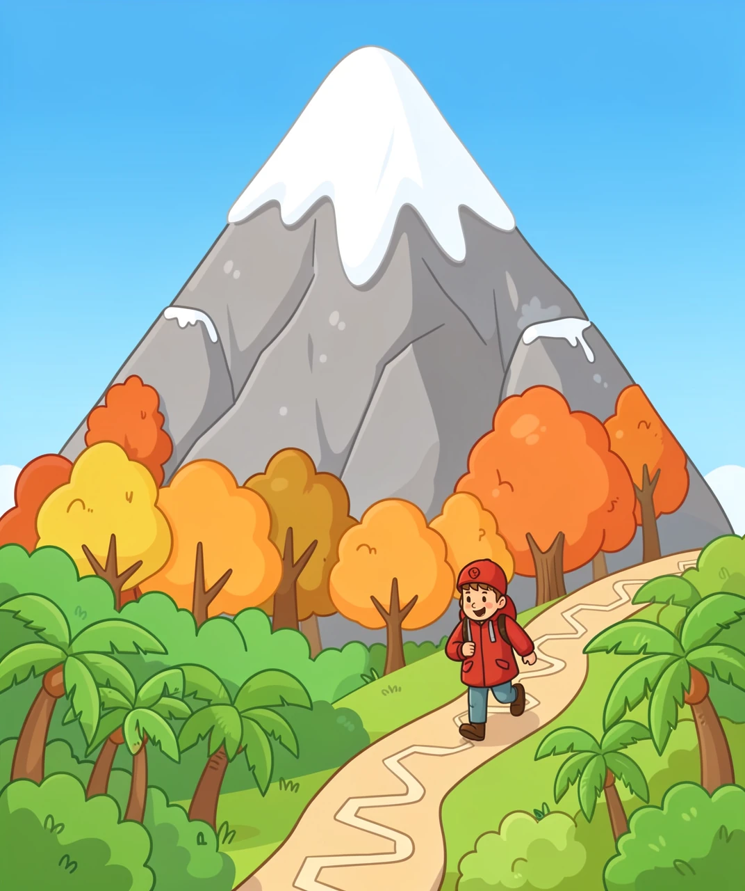
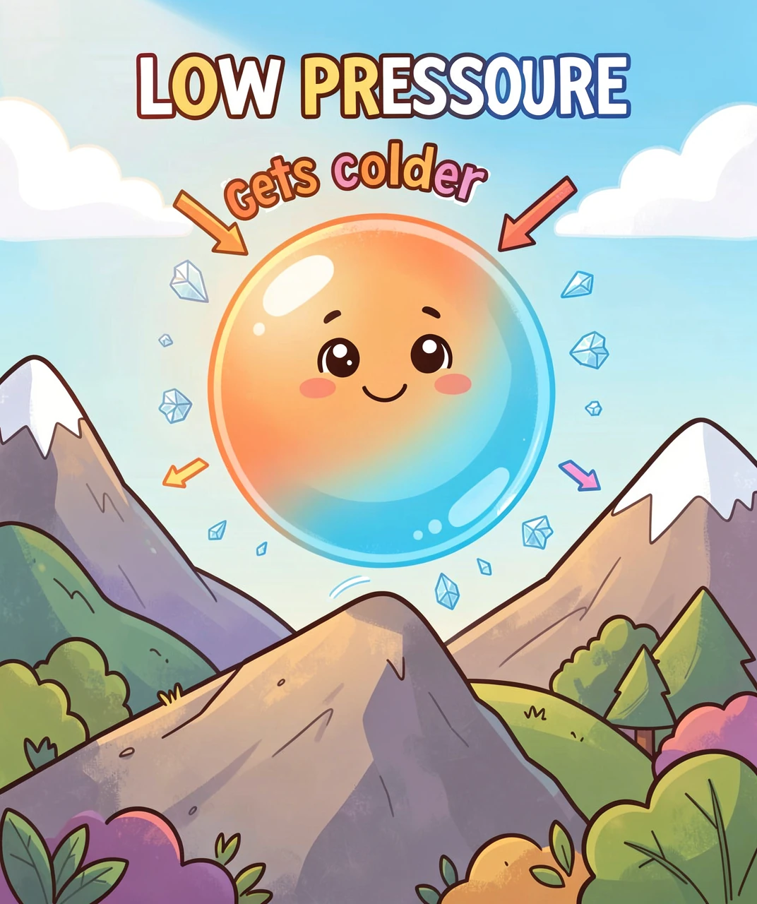
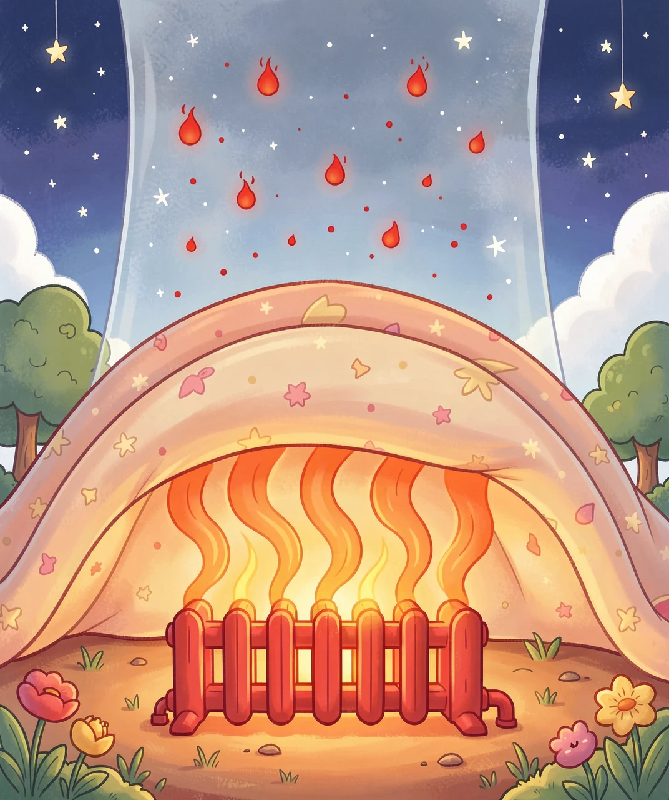
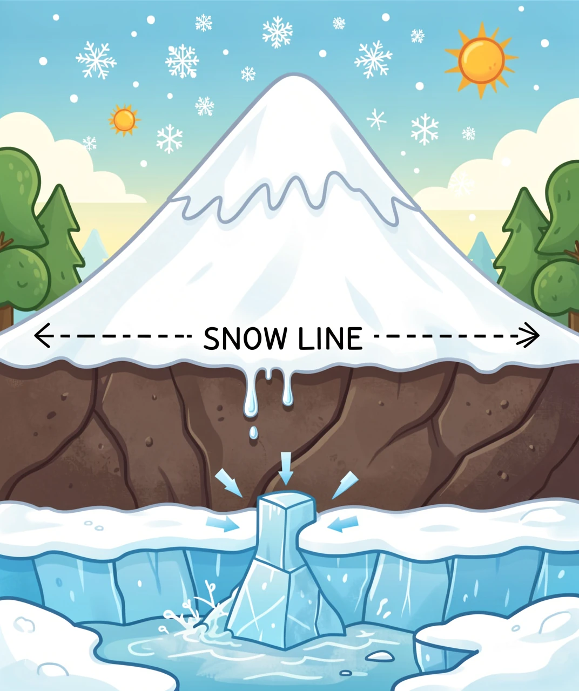
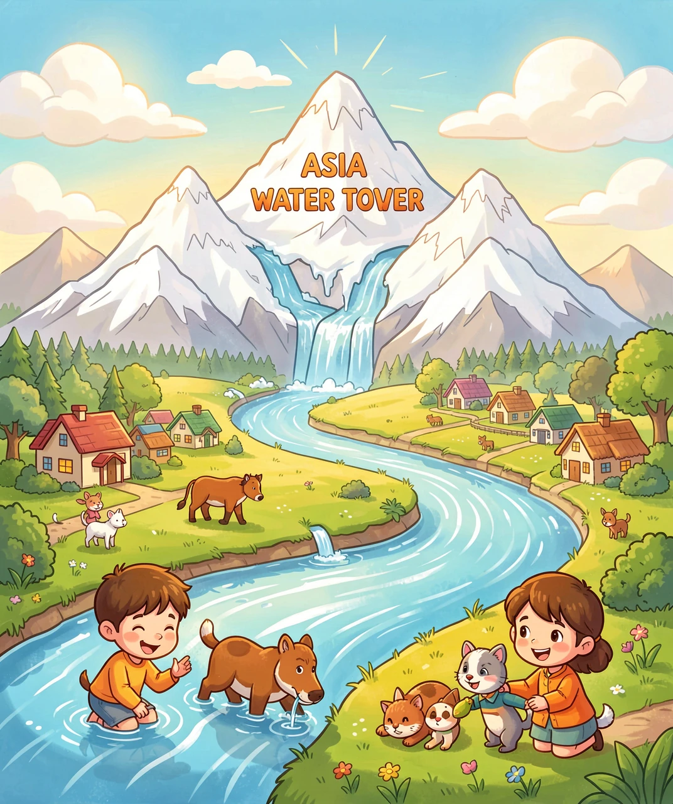

为什么越高的山顶，永远都戴着雪？
想象你在爬一座大山。山脚下，你穿着短袖还出汗，知了在叫，这是夏天。往上爬两个小时，树变矮了，风变凉了，你得加一件外套——像秋天。再往上，树没了，只剩草和石头，你开始发抖，这是冬天。最后站在山顶，脚下白茫茫一片，哈气成霜，比老家最冷的冬天还要冷几十倍。
奇怪的地方来了：山顶明明离太阳更近啊！珠穆朗玛峰顶比海平面高出将近 9 公里，按理说离太阳近了，不是应该更暖和吗？为什么反而冷得能冻住雪？今天我们就把这件事一层层剥开，看看是谁把山顶变成了冰箱。

真正的原因，藏在空气的压力里。我们住在地球这个「空气海洋」的底部，头顶上压着厚厚一整层空气。就像潜到泳池最底下时，水把你的耳朵压得发闷——我们一直被空气「压」着。压力越大，空气分子被挤得越紧、撞得越凶，温度就越高；压力一小，分子松开、撞得少，温度就掉下来。
那么山顶的空气为什么会松开呢？因为海拔越高，头顶上的空气柱越短、越轻，气压越低。一团圆空气从山脚往上飘，就像一瓶被打开的汽水：外面的压力突然变小，它就拼命膨胀。膨胀需要力气——空气分子要推开旁边的空气，就得消耗自己的能量。能量花掉了，剩下的能量就变少，表现就是变冷。物理学家管这叫「绝热冷却」。
这个降温有多快？平均来说，每爬高 1000 米，气温就掉 6.5℃。珠峰大本营（约 5200 米）比起同纬度的平原，就已经低了三十多度。所以在山下是 30℃ 的夏天，山那头 8000 米的地方稳稳待在零下几十度——雪当然化不掉。

还有第二个原因，而且更关键。很多人以为：太阳照热空气，所以离太阳越近越暖。可真实的顺序是反过来的——阳光穿过空气的时候，几乎不怎么加热空气。阳光像穿过玻璃一样穿过大气，先砸在地面上。地面被晒热之后，再像一块巨大的暖气片，把热量从下往上传给贴着它的空气。所以海拔越高，离暖气片越远，就越冷。
再追问一层：暖气片的热，为什么留不住？因为空气里有水汽、二氧化碳、甲烷这些「温室气体」，它们像被子一样，能把地面往外跑的热量（红外线）接住一部分、再送回来。这床被子在低处最厚——那里空气又浓又湿；到了高处，空气稀薄到只有海平面的三分之一，水汽更是少得可怜，被子变成了一层纱。热量照进来容易，跑出去更容易，一去不回地散进太空。这就解释了另一件事：为什么又高又干的地方，白天晒得烫、夜里冻成冰——因为没有被子。

现在我们知道了高处很冷。可是「冷」和「常年积雪」之间，还差一步。珠峰顶上也会出太阳，雪难道不会化吗？
关键不在于某一天有多冷，而在于一整年的总账：一年里落下来的雪，和一年里化掉的雪，谁更多？如果落的多、化的少，剩下的雪就会一年年堆积——这里就有了永久积雪。这条分界线，地理学家叫它「雪线」：雪线以上，积雪永远赢；雪线以下，太阳赢。
于是又有一件厉害的事发生：雪是白色的，白色会把大约 80% 的阳光直接反射回去（深色泥土只反射 20%）。阳光被弹走了，地面吸不到热，温度更低，于是雪更不容易化——雪越多越冷，越冷雪越多，这是一个会自我加固的循环。这就是为什么一旦山顶戴上白帽子，就很难再摘下来。
继续往深处问：雪堆久了会变成什么？新雪很松，里面全是空气。一层压一层，底下的雪被压得把空气挤出去，慢慢变成一粒粒的「粒雪」，再压紧、再冻结，最后变成致密坚硬的蓝色冰川冰——冰块压紧到一定程度，会吸收红光、只让蓝光透出来，所以老冰川是蓝色的。喜马拉雅的雪不只是「雪」，它是一座巨大的固体水库。

现在我们可以玩一个「假如」游戏了。假如地球平均气温再升高一两度，雪线就会往上挪——原本常年积雪的地方，夏天开始露出来。露出来的是深色的岩石，深色不怎么反射阳光，反而拼命吸热，于是更热、雪线再往上挪……刚才那个「自我加固」的循环，这回朝着反方向转了起来。
这顶帽子化掉，影响的远不止爬山的人。喜马拉雅和青藏高原的冰川被称为「亚洲水塔」——长江、黄河、恒河、印度河、湄公河，十几条大河的源头都在这里，靠着冰川和积雪在旱季慢慢放水，养活了下游十几亿人。如果固体水库变小，雨季可能洪水更多，旱季河流却更干。
所以，下次你在照片里看到喜马拉雅那道白色帽檐，可以这样讲给别人听：它不是因为「离太阳远」，而是因为高处气压低、空气膨胀降温，加上离地面这块暖气片太远、被子又太薄；雪落得多、化得少，还靠自己的白色把阳光弹回去，才一年年堆成了冰川。山顶的雪，是大气物理学写在大地上的一道算术题。

（答案：1-B 2-B 3-B 4-C 5-A）